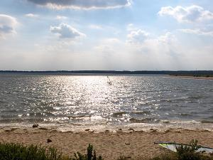
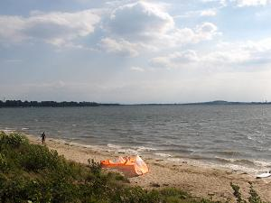
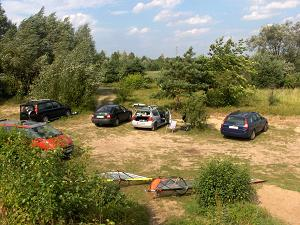

WINDSURFER.COM.PL
Gdzie
mo¿na pojeŸdziæ -
na Œl¹sku/ Video / Kurs
windsurfingu/
/Wa¿ne
adresy/ /Kalendarium / Og³oszenia / Moje
fotki
Miejscówki
(spoty) Europejczyka / S³ownik windsurfingowy / Kobiety
foto


 Czaniec
Czaniec
Zbiornik na Sole, 1966, zapora ziemna, pow. 47
ha, d³. 1,5 km, pojemnoœæ 1,3 mln m3.-brak danych
na teamt windsurfingu w tych okolicach
 Dzieækowice - Imielin - NAJLEPSZY ZBIORNIK W PO£UDNIOWEJ POLSCE
Dzieækowice - Imielin - NAJLEPSZY ZBIORNIK W PO£UDNIOWEJ POLSCE
Dzieækowice - zbiornik wody pitnej po³o¿ony
przy autostradzie A4 na wysokoœci Jaworzna. Dojazd od strony
Imielina, Jelenia lub Che³mka (ko³o nowej pompowni). Czêœæ
zbiornika posiada wybetonowane brzegi. Du¿a otwarta powierzchnia
zapewnia doskona³e warunki wiatrowe. Jezioro Imieliñskie
utworzono w 1985 w miejscu wyrobiska piasku podsadzkowego, pow.
ponad 500 ha. Zbiórka deskarzy przy starej lub nowej pompowni.  
 Dzier¿no du¿e
Dzier¿no du¿e
Jezioro zwane jest te¿ Jeziorem Rzeczyckim, na p³n. od
Rzeczyc, gmina Rudziniec niedaleko od Gliwic obok trasy E40,
dawne wyrobisko piasku podsadzkowego, pow. 615 ha i poj. 41 mln m3.
Utworzone 1970 r.
 Dzier¿no ma³e
Dzier¿no ma³e
Jezioro, na p³n. od Dzier¿na, miasto Pyskowice,
dawne wyrobisko piasku podsadzkowego, pow. 105 ha i poj. 10 mln m3.
Utworzone 1935 r. Oœrodki wypoczynkowe. Brudna woda do potêgi!
 Gocza³kowice
Gocza³kowice
Jezioro Gocza³kowickie, zbiornik retencyjny na
Wiœle, pow. 3200 ha i poj. 168 mln m3. Utworzone 1956
r.- zakaz ¿eglugi. (Ale mo¿na p³ywaæ ko³o miejscowoœci
£¹ka ). Czekamy na inicjatywê w³adz lokalnych i otwarcie
zbiornika dla sportów wodnych.
 Kokotek
Kokotek
Malowniczo po³o¿one jeziorko pomiêdzy Tworogiem a Lubliñcem.
 £¹ka
£¹ka
Zbiornik po³o¿ony na p³n. od Jez. Gocza³kowickiego, ko³o
miejscowoœci £¹ka.
 Miêdzybrodzkie
Miêdzybrodzkie
Na Sole, obok Zywieckiego, utworzone w 1936,
zapora betonowa, pow. 380 ha, d³. 3,7 km, maks. g³êb. do 20 m,
pojemnoϾ 28,4 mln m3. Zamontowane nartociagi.
 Nak³o-Chech³o
Nak³o-Chech³o
Dojazd do jeziora samochodem od strony
Tarnowskich Gór lub Miasteczka Œl¹skiego. Niezmotoryzowani
mog¹ dojechaæ autobusem lub kolejk¹ w¹skotorow¹.
Wjazd wewnêtrzn¹ drog¹ na teren jeziora p³atny - 2 z³. Samochód mo¿na zostawiæ na parkingach w lesie lub dojechaæ nad sam¹ wodê na pole namiotowe - op³ata 3 z³. Wokó³ jeziora prowadzi aswaltowa droga niestety zakaz ruchu.
Na terenie Nak³a-Chech³a znajduj¹ siê wypo¿yczalnie kajaków i rowerów wodnych oraz ¿aglówki brak wypo¿yczalni windsurfingu.
Wzd³u¿ jeziora liczna baza gastronomiczna jest nawet budka telefoniczna.
 Paprocany
Paprocany
Jezioro Paprocañskie ko³o Tychów, w 1870 r. spiêtrzono
Gostyniê zapor¹ ziemn¹, pow. 132 ha i poj. 2,5 mln m3.
 P³awniowice
P³awniowice
Jezioro obok trasy E40 kilkanaœcie kilometrów od Gliwic, ma
p³n. od P³awniowic, gmina Rudziniec, dawne wyrobisko piasku
podsadzkowego, pow. 250 ha i poj. 20 mln m3. Utworzone
1970 r.
 Przeczyce-Siewierz
Przeczyce-Siewierz
Zbiornik na Czarnej Przemszy, pow. 470 ha i poj.
21 mln m3. Utworzony 1963 r. Dojazd do jeziora od
strony Siewierza, Boguchwa³owic lub Przeczyc. Polecam raczej
w³asny œrodek transportu.
Samochód niestety trzeba zostawiæ pod drzewami blisko wody brak bowiem dobrze oznakowanych parkingów.
Przeczyce to raj dla wêdkarzy, bardzo ma³o wypo¿yczalni sprzêtu wodnego. Baza gastronomiczna tak¿e uboga warto wzi¹æ w³asny prowiant.
 Pogoria I i Pogoria III
Pogoria I i Pogoria III
Dwa zbiorniki wodne po³o¿one na terenie D¹browy
Górniczej,oddalone s¹ od siebie kilka kilometrów - czysta
woda. Pogoria I jest gêsto zabudowana i ma strome brzegi,
utworzona w dawnym wyrobisku piasku podsadzkowego, pow. 120 ha.
Pogoria III to równie¿ wyrobisko piasku podsadzkowego, posiada
szerok¹ piaszczyst¹ pla¿ê z jednej stony i ³atwy dostêp,
przeciwny brzeg jest troche stromy, ale tam te¿ jest
wypo¿yczalnia desek i szkó³ka. Dane Pogorii III - a)
charakterystyka powierzchni zbiornika: - powierzchnia
zwierciad³a 2,08 km2, - d³ugoœæ zbiornika 2,02 km,- œrednia
szerokoϾ jeziora 1,03 km, - maksymalna szerokoϾ jeziora
1,51 km, - d³ugoœæ linii brzegowej 6,49 km, b).
charakterystyka misy zbiornika: - pojemnoϾ zbiornika 12,2 mln
m3, - g³êbokoœæ maksymalna ponad 17 m, - g³êbokoœæ
œrednia 5,91 m., - nachylenie dna zbiornika 3,09%.
 RogoŸnik
RogoŸnik
Dwa ma³e jeziora w miejscowoœci RogoŸnik, kilka kilometrów od
Wojkowic. Nadaj¹ siê raczej do wêdkowania ni¿ na deskê.
 Zalew Rybnicki
Zalew Rybnicki
Du¿y zbiornik na Rudzie ko³o Elektrownik Rybnik z ciep³¹
wod¹., pow. 543 ha i poj. 24 mln m3. Utworzony 1972
r.
 Sosina
Sosina
Wyrobisko piasku podsadzkowego, jezioro
usytuowane jest ok. 5 km od Jaworzna. Samochód mo¿na zostawiæ
na parkingu blisko wody.
Na terenie Sosiny mo¿na wypo¿yczyæ sprzêt p³ywaj¹cy - brak wypo¿yczalni windsurfingu, ze wzglêdu na niedu¿e rozmiary jeziorko nadaje siê tylko do nauki p³ywania.
Wokó³ jeziora prowadzi w¹ska polna droga,czysta woda i cisza sprawiaj¹, ¿e jest to raj dla wêdkarzy.
 Œwierklaniec- Koz³owa Góra
Œwierklaniec- Koz³owa Góra
Jezioro Œwierklanieckie, zbiornik wody pitnej na Brynicy, ko³o
Piekar Œl¹skich pow. 587 ha i poj. 16 mln m3.
Utworzone 1940 r. Niestety tu nie posurfujemy a warunki s¹
wspania³e du¿a, otwarta przestrzeñ, ale kajakarze p³ywaj¹
trochê to dziwne.
 Jezioro Turawskie
Jezioro Turawskie
Du¿y zbiornik, woda zielonkawa ale wystêpuj¹ czasami du¿e
fale i mocne wiatry.
 Jezioro ¯ywieckie
Jezioro ¯ywieckie
Na Sole, 1967, zapora ziemna, pow. 1060 ha, d³. 8 km, szer. do 2
km, maks. g³êb. 20 m, pojemnoœæ 107 mln m3.
Elektrownia wodna o mocy 21 MW. Bardzo ³adnie po³o¿one, woda
wzglêdnie czysta, ale surfowanie tylko przy halnym, najlepszy
dojazd do wody przy Klubie MEGA.
 Zalew Nyski (G³êbinowski)
Zalew Nyski (G³êbinowski)
Mekka wêdkarzy, ¿eglarzy i ca³ej reszty wodniaków na
po³udniowym zachodzie. Dobra baza noclegowa (Skorochów,
G³êbinów), wypo¿yczalnia desek, kajaków i innych
p³ywade³..

 krisbu@friko2.onet.pl
krisbu@friko2.onet.pl
UIN 19831925
Gadu-Gadu 50514
aktualizacja 1-11-2002
| Strona
znajduje siê na serwerze www.republika.pl |